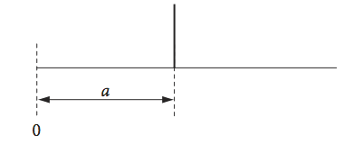
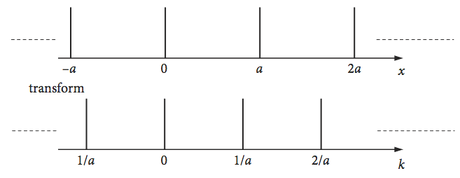

Questions 7 - 15¶
Q7 Spectral line-width¶
The excited states of isolated atoms and molecules normally decay exponentially in time. When a spectral line is measured, the spectrometer performs a Fourier transform, converting the time profile into a spectral profile that has a Lorentzian shape, and looks something like a Gaussian but is wider in the wings. (We assume that the line measured is isolated from others so that no overlap occurs.) The detector, a photodiode, CCD camera, or photomultiplier are all ‘square law’ detectors and measure the square of the absolute value of the electric field of the radiation; \(E^*E = | E |^2\). Suppose that the emission starts at time zero and decays with a lifetime of \(\tau\) seconds, with a rate \(\displaystyle E(t) = e^{-t /\tau}/\tau\) photons/second, calculate the Fourier transform, and plot this with the decay, assuming that \(\tau = 10\).
Calculate the half-width of the spectral line produced and comment on its value.
Strategy: The variable is time \(t\) rather than \(x\), as in equation (27). The limits are from 0 to \(\infty\). The half-width is calculated by evaluating half the value of the height of the transformation at \(k\) = 0, which represents the spectral line, then solving for \(k\).
Q8 Fourier transform of light pulse¶
If a rectangular light pulse of duration \(t_p\) is used to excite a molecule, its electric field can be represented as \(\displaystyle E(t) = e^{iω_0t}\), 0 \(\lt t \lt t_p\).
(a) Calculate the real, the imaginary, and the square of the absolute value of the Fourier transform, and thereby convince yourself that the pulse is comprised of many frequencies. Find its principal frequency when the transform is at a maximum. Change the notation in equation (27) from \(k\) to \(\omega\) explicitly to acknowledge that \(k\) is a frequency. Plot the real and imaginary parts of the transform and \(| g |^2\), the absolute square of the transform, using \(\omega_0\) = 20000 cm-1 and a pulse duration of 0.1 ps.
(b) What frequencies are missing?
Strategy: In (a) use the transform equation (27) and change \(k\) to \(\omega\); the integration is over time so change \(x\) to \(t\). In (b) the missing frequencies must occur when the transform is zero.
Q9 NMR pulse shape¶
In an NMR experiment, nuclear spins are excited by a rectangular shaped electrical pulse of length \(\tau\) and amplitude \(a\).
(a) Show that the Fourier transform has the same mathematical form as that calculated with Q8, except for a constant frequency offset.
(b) Show that the real part of the transform is proportional to the sinc function \(\sin(\omega \tau)/\omega \tau\).
(c) What is the fwhm frequency spread of the real part of the pulse if \(\tau = 1\, \mu\)s?
(d) What is the frequency spread in ppm in a 400 MHz spectrometer? Would this pulse duration be suitable for proton NMR spectroscopy?
Q10 NMR FID¶
In an NMR experiment, two lines are measured with frequencies \(\nu_1\) and \(\nu_2\). The free induction decay has a decay time (lifetime) of \(\tau = 100\) which multiplies the sum of two cosines having frequencies \(\nu_1 = 1/10\) and \(\nu_2 = 1/11\) making the FID \(\displaystyle e^{-t/\tau}[\cos(2\pi\nu_1t) + \cos(2\pi\nu_2t)]\). In this and similar equations, the frequencies in Hz (s\(^{-1}\)) are multiplied by \(2\pi\) to make them into radians s\(^{-1}\) because all trigonometric functions have these units as their arguments.
(a) Explain what physical processes generate the FID. Why does it decay away?
(b) Fourier transform the FID and reproduce Fig. 14.
Use SymPy and take limits of the transform integral from zero to \(t\) = 1000.
Strategy: (b) Having set up the FID, transform it using equations (27 - 28), integrate from \(t = 0\) to some large value, say \(1000\), but you may have to change this to reproduce the figure. Too short an integration time produces wiggles on the transform, why is this?
Q11 Phase¶
(a) Show that, if the phase \(\displaystyle \varphi\) of \(\sin(2\pi t/t_0 + \varphi)\) is chosen not to be \(n\pi\), where \(n\) is an integer including zero, then both real and imaginary parts of its Fourier transform exist.
(b) When the phase is n\(\pi\) show that the transform is imaginary.
Q12 Electron density as a delta function¶
Suppose that the electron density of an atom can be represented in one dimension as a delta function at a distance \(a\) from the origin; \(\delta(x - a)\). The scattering of electromagnetic waves, such as X-rays off an atom’s electrons is represented by the Fourier transform with such a delta function.
(a) Calculate this and its probability, or power density, and show that waves scatter equally in all directions. The width of the delta function is infinitesimally narrow, so that a is always greater than this width.
(b) Repeat the calculation with a Gaussian electron density of width \(2d\) centred at position \(a\) i.e. \(\displaystyle e^{-(x-a)^2/d^2}/d\) . Comment on the scattering.

Figure 22. Schematic of one atom’s electron density as a \(\delta\) function.
Strategy: General properties of \(\delta\)-functions are given in Chapter 1.10. In this question, the useful property is that it extracts the function \(f(a)\) out of the integral \(\displaystyle \int_{-\infty}^{\infty} f(x)\delta(x-a)dx = f(a)\) and no calculation is necessary. If \(P\) is the Fourier transform, then the ‘power density’ is \(P^*P\).
Q13 Two delta functions¶
Following on from the previous question, suppose now that there are two (atom) delta functions separated by a distance \(2a\). Show that the Fourier transform is a cosine and calculate the probability density.
Strategy: The delta function at position \(\pm a\) is \(\delta (x \pm a)\).
Q14 Comb of delta functions¶
Continuing from Q13, consider a comb of atoms represented as \(\delta\)-function scattering centres that might represent a one-dimensional crystal that can scatter X-rays. Each atom is separated from the next by a distance \(a\). Calculate the transform for a row of atoms extending from \(-\infty \to\infty\), and show that it is the same as in the figure. The total transform is the sum of this infinite number of individual transforms. Consider two cases; one where the waves have arbitrary wavelengths, and the other when they have wavelength \(a\).

Figure 23. A comb of atoms and its transform
Strategy: The initial task here is to define the \(\delta\)-function for an atom at some position \(na\). The total transform is the sum of all the individual atoms, in which case, \(n\) ranges from \(-\infty \to +\infty\).
The physics involved determines how to solve the infinite sum produced. If the X-rays (or photons/waves in general) scattering off the atoms are in phase, then a different sum is obtained compared to when they are not in phase. Being ‘in phase’ means that the X-rays scatter, so that the scattering from each atom reinforces the total at the scattering angle; being out of phase means that the scattering is overall zero. If the waves have different wavelengths, in general the overall scattering must be zero, because the scattering from adjacent atoms cannot reinforce one another.
Q15 Exponential laser pulse.¶
A laser produces an exponentially shaped pulse \(\displaystyle p = e^{-|\,ax\,|}\), with a duration (fwhm) of \(\tau = 10\) fs at 800 nm.
(a) Calculate \(a\), then calculate the frequency spread of the pulse and
(b) calculate the number of modes or waves to be added together in the laser to form this mode-locked pulse if the laser cavity is 1.5 m long. The photons fit into the cavity in integer numbers of half wavelengths.
Strategy: Take the wavelength spread to be the full width at half maximum (fwhm) of the frequency spread, which is calculated with a Fourier transform. The scaling has to be correct in this calculation. It will be useful to work in units of fs and wavenumbers.